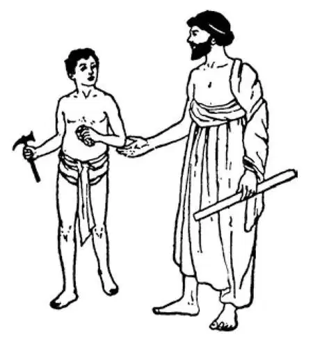
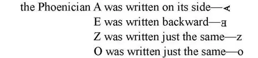
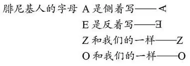
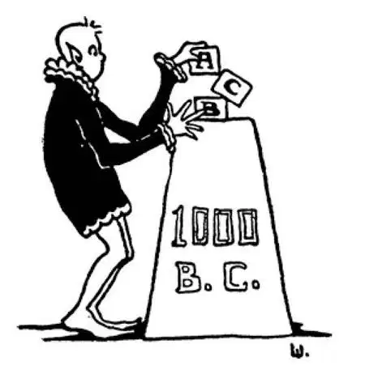

13
The People Who Made Our ABC's
发明字母ABC的人

LONG before people knew how to write, there lived a carpenter named Cadmus. One day he was at work on a house when he wanted a tool that he had left at home. Picking up a chip of wood, he wrote something on it and, handing it to his slave, told him to go to his home and give the chip to his wife, saying that it would tell her what he wanted. The slave, wondering, did as he was told. Cadmus's wife looked at the chip, and without a word handed the tool to the amazed slave, who thought the chip in some mysterious way had spoken the message. When he returned to Cadmus with the tool, he begged for the remarkable chip, and when it was given him, hung it around his neck for a charm.
This is the story the Greeks told of the man they say invented the alphabet. We believe, however, that Cadmus was a mythical person, for the Greeks liked to make up such stories, and we think no one person made the alphabet. But Cadmus was a Phoenician and we do know that the Phoenician people invented the alphabet on which ours is based. You probably call it your A B C's, but the Greeks had much harder names for the letters. They called A alpha , B beta , and so on. So the Greek boy spoke of learning his alpha beta , and that is why we call it the alphabet .
You may never have heard of Phoenicia or the Phoenician people. Yet, if there had been no such country as Phoenicia, you might now be learning at school to read and write in hieroglyphics or in cuneiform.
Up to this time, you know, people had very clumsy ways of writing. The Egyptians had to draw pictures, and the Babylonians made writing like chicken tracks. The alphabet that the Phoenicians invented had twenty-two letters, and from it we get the alphabet we use today.

Cadmus's slave and the chip
（卡德摩斯的奴隶和那块木片）
Of course, we do not use just the same alphabet now that the Phoenicians did, but some of the letters are almost, if not quite, like those we now have after three thousand years. For instance, the Phoenician

The Phoenicians lived next door to the Jews; like the Jews, they were Semites. Their country was just north of the kingdom of the Jews; that is, above it on the map and lying along the shore of the Mediterranean Sea.
The Phoenicians had a great king named Hiram who lived at the same time as Solomon. In fact, Hiram was a friend of Solomon and sent him some of his best workmen to help build a temple at Jerusalem. Yet Hiram himself and the Phoenicians did not believe in the Jewish God.
The Phoenicians worshiped idols named Baal and Moloch, which they called gods of the sun. They also believed in a goddess of the moon named Astarte and made sacrifices of live children to her idol, Fe-Fi-Fo-Fum; this is a real story and not a fairy tale. Just suppose you had been a child then!
The Phoenicians were great business people. They made many things to sell, such as objects carved from ivory, engraved gold and silver items, and beautiful glassware. They knew how to weave woolen and linen cloth, and were well known for the dyed cloth and robes that they manufactured.
They knew the secret of making a wonderful purple dye from the body of a little shell-fish that lived in the water near the city of Tyre. This dye was known as Tyrian purple from the name of that city, and it was so beautiful that kings' robes were colored with it.
Tyre and Sidon were the two chief cities of Phoenicia, and once upon a time they were two of the busiest cities in the world.
In order to find people to sell to, the Phoenicians traveled in boats all over the Mediterranean Sea and even went outside this sea into the Great Ocean. This opening is now called the Strait of Gibraltar, but was then known as the Pillars of Hercules. They went as far as the British Isles and along the coast of Africa. Many other people in those days had not dared to go so far in boats; they thought they would come to the edge of the ocean and tumble off. But the Phoenicians had no such fear, and so they were the greatest sailors as well as the greatest traders of their times. Their ships were built from the cedar trees that grew on the slopes of their hills. The trees were called the cedars of Lebanon.
In one way, the Phoenicians were very short-sighted. They cut down all their wonderful cedar trees until almost none were left. Then no more ships—or anything else—could be made with the strong wood. Do you think we would ever do anything as foolish as that?
When the Phoenicians found good harbors for their boats, they often started little towns where they traded with the local people. Often they drove a hard bargain, trading purple cloth worth very little for gold or silver or other things worth a great deal. On the coast of north Africa, one of these towns they started was called Carthage. Carthage later grew to be very strong and wealthy—but you will have to wait a while until I come to that story.
【中文阅读】
人类在知道如何写字之前很久很久，有个名叫卡德摩斯的木匠。一天，他正在造房子，忽然想起有件工具忘在家里了。他捡起一块木片，在上面写了几笔，然后把木片递给他的奴隶，要他回去交给女主人，说木片会告诉她自己要的是什么。奴隶感到纳闷，照他的话去做了。卡德摩斯的妻子看了看木片，什么也没说就把工具递给了十分惊异的奴隶。奴隶认为这块木片一定是以一种神秘的方式传递了主人的信息。当他拿着工具回去交给卡德摩斯的时候，乞求主人把这块神奇的木片赐给他。得到允许之后，他就把它挂在脖子上当做护身符。
这是希腊人所说的发明了字母的人的故事。不过，我们相信卡德摩斯只是个虚构的人物，因为希腊人喜欢编撰这类故事。我们认为字母不是由“一个人”发明的。不过，卡德摩斯是腓尼基人，而我们确信腓尼基人发明了早期的字母表，为我们今天使用的字母表打下了基础。我们读字母表发音很简单，就是A、B、C……但是希腊人的字母读法就难得多。他们把A读作“阿尔法”（alpha ），B读作“贝它”(beta )，等等。所以，希腊的孩子学习是从“阿尔法”和“贝它”开始的，这也是为什么我们把“字母表”叫做alphabet 的原因。
你可能从未听说过腓尼基或腓尼基人，但是如果历史上没有腓尼基这个国家，你现在可能正在学校学习用象形文字或楔形文字来读和写。
读到这里你知道了，人们有过很笨拙的书写方式。埃及人写字就得画画，巴比伦人写的字像鸡爪印。腓尼基人发明的字母表有22个字母，由此演变成了我们今天使用的字母表。
当然，我们使用的字母和腓尼基人的并不一样，但是，他们的一些字母和三千年后的我们使用的字母样子差不多少。例如：

腓尼基人和犹太人相邻，他们和犹太人一样，也是闪米特人。他们的国家刚 好位于犹太王国的北边；也就是说，在地图上，它在犹太王国的上面，位于地中海沿岸。
腓尼基人有一位伟大的国王叫海勒姆，和所罗门生活在同一个时代。实际上，海勒姆还是所罗门的朋友，曾经派出一些最好的工匠帮助所罗门建造耶路撒冷的圣殿。不过海勒姆本人和腓尼基人并不信仰犹太人的上帝。
他们崇拜的神有巴尔神和摩洛神，他们称这两个神为太阳神。他们还信仰名叫阿施塔特的月亮女神，并杀死儿童向她的神像献祭，阿弥陀佛，这可是真人真事，不是神话故事。假如你是生活在那个时代的孩子，该是多么令人恐怖啊！
腓尼基人是非常了不起的商人，他们制作了各种各样的东西来卖，比如象牙雕刻品、精雕细刻的金银饰品、晶莹剔透的玻璃制品等等。他们还会织毛纺布和亚麻布，他们制作的染色布料和染色长袍也极负盛名。
他们知道制作一种鲜亮的紫色染料的秘诀，它是从一种小牡蛎身体里提取的，这种小牡蛎就生活在提尔城附近的海域里。所以，这种紫色染料以提尔城的名字而取名为提尔紫，提尔紫非常鲜亮，因此国王们的长袍都染成提尔紫。
提尔和西顿是腓尼基的两座主要城市，也曾经是世界上最繁忙的两座城市。
为了打开销路，腓尼基人驾船走遍了地中海，甚至出地中海进入大西洋。这个出海口现在叫直布罗陀海峡，但是那时叫“赫拉克勒斯之柱”。他们的足迹远至大不列颠群岛和非洲海岸，而当时的很多人可不敢驾船航行那么远，因为他们认为走到海洋的边缘就会摔下去。可是，腓尼基人却没有这样的担心，所以他们是那个时代最伟大的航海家和商人。他们的船是用长在山坡上的雪松建造的，这种树叫黎巴嫩雪松。
在某一点上，腓尼基人目光又很短浅。他们砍倒所有挺拔的雪松树，直到一棵也不剩，结果再也没有这种坚实的木头去造船或其他什么东西了。你觉得我们也会做类似这样的蠢事吗？
腓尼基人一找到适合停泊的港口，就开始在那里建一个镇子，和当地人做生意。他们总是很善于讨价还价，用成本很低的紫色布匹换来真金、白银或其他贵重物品。在北非沿岸，他们也兴建了一些城市，其中有一个叫迦太基。迦太基后来发展得非常强大富有——但是你得等一会儿，我再讲它的故事。

公元前1000年